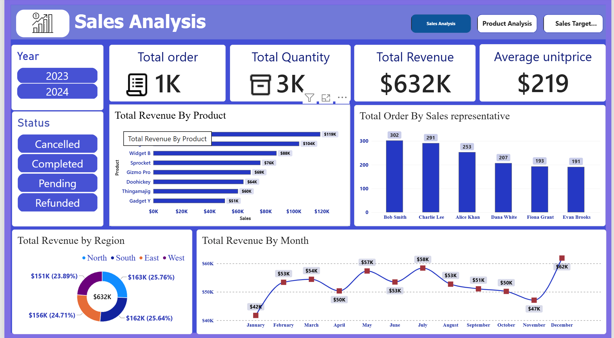
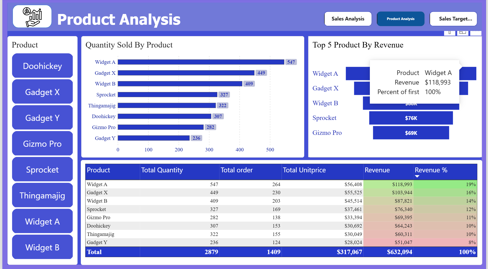
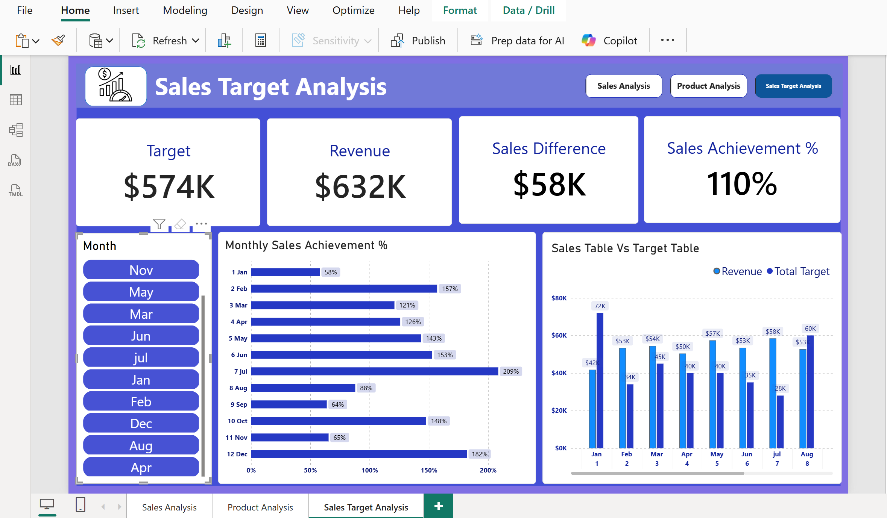

SQL & MySQL
Querying, filtering, joins, aggregations, data validation and analysing structured datasets.
I use SQL, MySQL, Excel and Power BI to explore data, analyse business performance, and build interactive dashboards. My portfolio demonstrates hands-on projects in data preparation, KPI reporting, product analysis and business insights.
Explore My Projects GitHub ProfileI am an aspiring Data Analyst interested in data cleaning, SQL querying, business intelligence and dashboard development. My portfolio highlights practical projects that demonstrate my analytical approach, technical skills and continuous learning.
Tools and techniques I use in my data analytics projects.
Querying, filtering, joins, aggregations, data validation and analysing structured datasets.
Interactive dashboards, KPI cards, charts, slicers and business reporting.
Data preparation, data cleaning, exploratory data analysis, trend analysis and business insights.
Data organization, data cleaning, Pivot Tables, spreadsheet analysis and exploratory analysis.
Explore my data analytics projects, including project documentation, SQL analysis and interactive Power BI reports.
Sales performance analysis using MySQL, SQL and Power BI.
Analysing sales data to understand revenue, order volume, product performance, regional performance and monthly sales trends.
MySQL SQL Power BI Data VisualizationPower BI reports created to analyse sales performance, product insights and sales targets. Click an image to view it in full size.

Revenue, order volume and overall sales performance.

Product performance and sales analysis.

Monthly sales performance compared with targets.
End-to-end e-commerce analytics project using Excel, MySQL and Power BI.
Analysing Brazilian e-commerce data to understand customer purchasing behaviour, sales performance, product trends, payment methods and delivery patterns.
Excel MySQL Power BI E-Commerce AnalyticsThis project focuses on analysing Brazilian e-commerce transactions using the Olist dataset. The objective is to understand customer purchasing behaviour, sales performance, product performance, payment trends and order delivery patterns.
The project follows an end-to-end analytics workflow, starting with data preparation and exploration, followed by SQL-based analysis and interactive Power BI reporting.
The Olist dataset contains multiple related tables covering customers, orders, order items, products, sellers, payments, reviews and geographical information.
MySQL was used to examine the prepared e-commerce data and calculate key performance indicators.
An interactive Power BI dashboard was developed to present the key findings and business performance indicators.

Interactive slicers allow users to explore the report by Year, Month and Customer State.
This project provided practical experience in working with a multi-table e-commerce dataset, preparing data, performing SQL analysis and developing an interactive Power BI dashboard.
It demonstrates an end-to-end approach to data analytics and the ability to transform business data into meaningful insights.
View Complete Olist Project on GitHub →Interested in my work? Explore my GitHub profile to view my SQL projects, Power BI dashboards, data analysis work and project documentation.
GitHub Profile:
Jane-data-analytics
Project 1:
Sales Analytics — MySQL & Power BI
Project 2:
Brazilian E-Commerce Analytics — Olist